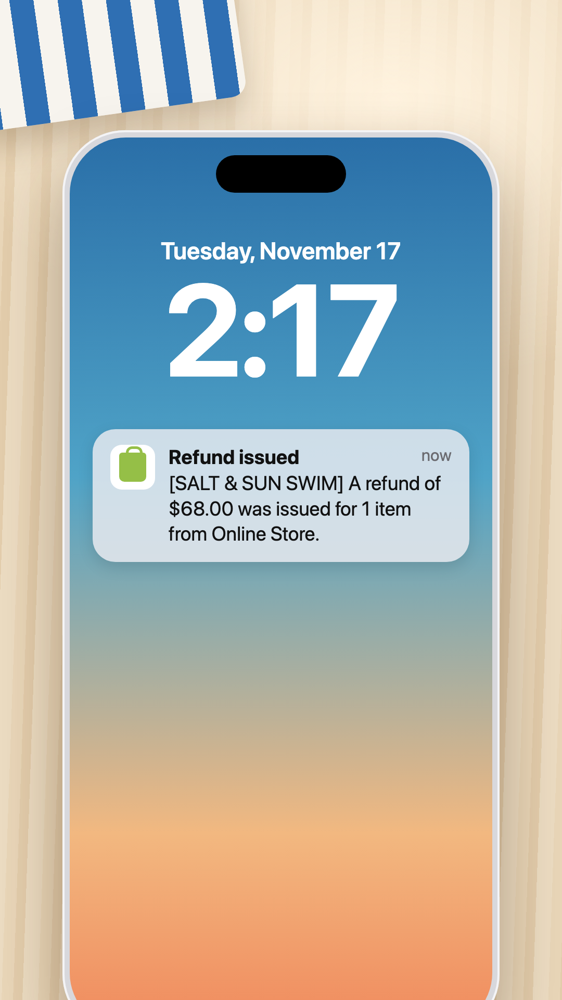
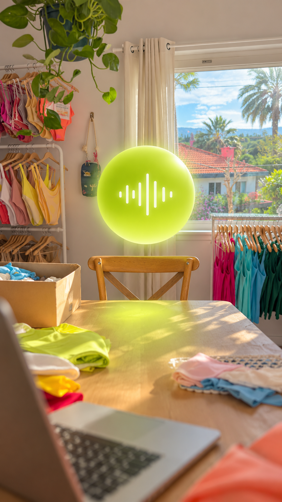
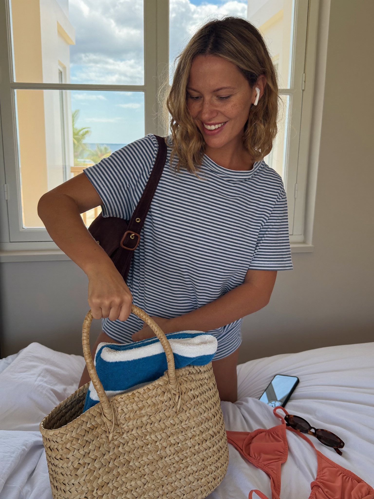
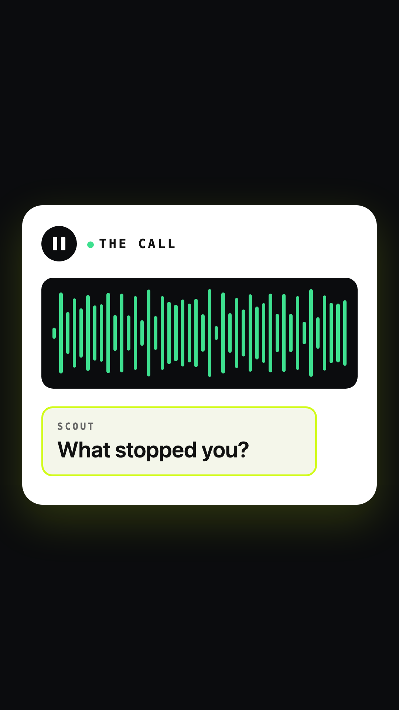
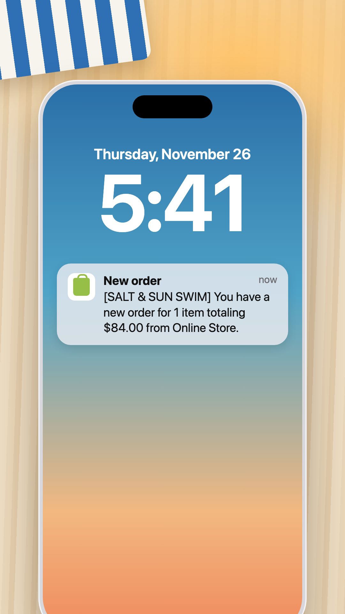

Borrowed camera moves: "Not yet"
A refund lands, she's one click from a discount, and Scout freezes time. Real viral camera moves (Bullet time, Eyes in, High flip) and The Dip's cutting rhythm go in as video references, so the freeze, the dive into the shopper's call and the snap back come from moves that already work on Higgsfield, not from adjectives.
Why this technique fits this story
- The story turns on three moves. The freeze, the jump into a past call and the return are the beats words describe worst. The guide's motion-reference row covers exactly this: "References motion and dynamic information from videos: action/expression/camera movement/creativity/effects". PG, R2V task table
- One video per beat, only the part we name. "Refer to the action of casting the spell in Video 1 and the wrap-around camera movement in Video 2", and "if only part of an asset should be referenced, clearly state which part". PG, Reference tasks (multi-asset mapping) ByteDance's own ad example binds six video clips to six moments of one film ("referring to the motion and camera movement of @Video2…"). Tutorial, Up to 50 omni reference assets
- Take the move, never the people. The clay-model example says the video "should only be used as a reference for camera movement, camera motion, shot rhythm… Do not reference its visual content." Every video line here ends with what not to take. PG, 3D clay-model video reference; Tutorial, Prompt rules: "what should not be referenced"
- Pace is a reference too. The Dip's first 8 s go in silent as Video 1 (its on-screen words and label blurred out), for "the shot language and action rhythm". PG 2.0, Asset configuration strategy (2.5 inherits motion refs: "consistent with Seedance 2.0")
- It fits the limits. Five videos, 26.5 s in all, each 4–8 s (limit: "up to 10 videos, combined total duration of no more than 30 seconds"; best "5-10 seconds"). PG, Reference asset input recommendations No reference video has subtitles or readable words ("Subtitles in a reference video may override the no-subtitle instruction"). PG FAQ, Subtitles
What changed (Emile, Nov 15)
Emile on the card: "When she says, 'I'm training them to wait,' she can't be half laughing. It has to be an aha moment… 'Let's delete all these discounts' is clear enough." Only the aha and the delete beats changed; no other line lost a word. Script card: nothing rendered, no credits spent.
| Beat | Before (Nov 14) | Now |
|---|---|---|
| The aha | 20–22 s, half laughing, half wincing: "I'm training them to wait." (5 words) | 18–20 s. She stops dead, eyes wide, free hand pressed to her forehead, no smile; stunned, a real shock of realisation: {Oh my god... I'm training them to wait.} (8 words, 9 syllables in 2 s). The flip lands on her already motionless, so she speaks the moment the camera settles; the "..." is a quick catch of breath, inside the quarter-second pause rule. |
| The decision | 22–23 s, close-up, she taps delete: "Noted." (1 word) | 20–23 s. Hard cut, seen from behind her at the laptop: decided, firm, {You know what? Let's delete all these discounts.} (8 words, 10 syllables in 3 s); her weekly discounts are listed and all ticked; her hand on the trackpad clicks Delete, the list empties and a dark toast reading "Discount deleted" pops up (the brief's exact toast words; "Discounts deleted" if Emile wants it plural). No finger on a screen, no form breaking apart. |
| Room for the lines | Flip 19–20 s on its own; dive 11–13 s | The flip now rides the last second of the shopper's 15–18 s shot, after her line (7 words, about 2 s); the dive is 11–12 s. Everything from 12 s to 18 s slides 1 s earlier with its words unchanged. The "Glad I asked" beat (23–25 s, Audio 3 ka-ching) and the end screen (25–30 s, Video 5) are untouched. Still 30 s, whole-second stamps, no gaps. |
| Assets | Same 16, one role each; none dropped, so still no 【Unused Assets】 block. Video 3 is now bound to 11–12 s and Video 4 to the end of 15–18 s. The free camera-map animatic is re-timed to match. Old files kept: prompt-sd25pe-final.pre-r3.txt, prompt.pre-r3.txt, index.pre-r3.html, a/camera-map-animatic.pre-r3.mp4. | |
Input
Laid out like ByteDance's examples. One pass, no second render.
Cost from Higgsfield's free get_cost preflight with video references attached: 90 credits, the same as without them (quoted on the 14-asset set). Unconfirmed for the full 16-asset set (7 images, 5 videos, 4 audio): the sd25-pe final adds Image 7 and Audio 4 and was not re-quoted. Every past quote with more references stayed 90; run get_cost on the 16 uploads before any render. Nothing was rendered. Text is written at 0–30 s with whole-second stamps and no gaps (PG, Timestamps).
Reference assets, in upload order
Upload in this exact order; the prompt counts "Image 1 / Video 1 / Audio 1" by it (PG, Reference tasks). Characters go in by first appearance: owner, then Scout, then shopper (PG FAQ, Incorrect character-to-reference mapping).
Soul 2 face, cast inside her own warm studio. Face, hair, outfit.

New. "Refund issued · [SALT & SUN SWIM] A refund of $68.00 was issued for 1 item from Online Store." Built in HTML, green bag kept.

Binds every owner shot to the bikini studio (the H215 lesson).

Busy, one task (packing), coral bikini on the bed.

The Dip's design, Scout's question only, so the shopper's answer is heard at 16 s before anything shows it. Rebuilt from the old card for 0 credits.

New. $84.00, Thursday, golden light: "a week later".

Cut out of Image 3 onto a plain background for free, so Scout has his own reference with no studio behind him, and Image 3 is only the room. sd25-pe: one role per asset.
Silent. Cutting rhythm, shot sizes, macro-phone-then-pull-back. Banner text and the laptop/product inserts (4–7 s) are blurred, so no words or label can leak. Bound to 0–8 s.
Higgsfield viral preset, 2.5–7.5 s, centre-cropped to 9:16. Bound to 8–11 s.
Higgsfield viral preset, 2–7 s. Push into the orb and out in the shopper's room. Bound to 11–12 s (was 11–13 s before Nov 15).
Higgsfield viral preset, 3–7 s. Rise and flip from the shopper back to the owner. Bound to the last second of 15–18 s, after the shopper's line ends (was its own 19–20 s beat before Nov 15).
Talking "o". Reproduced at 25–30 s; its voice is Scout's.
Timbre only; the prompt's words win. Cut to 8.9 s at a sentence end (was 13.4 s, media e05a2ee1) to make room for Audio 4 under the 30 s audio limit; 5–10 s is the guide's best range.
Relaxed, casual.
First 1.6 s, twice: refund (0 s) and full-price order (23 s).
The sound of Video 5 on its own (Deepgram: "Scout interviews your shoppers for you. Get free early access."). Scout's voice for his lines at 8–16 s, so Video 5 keeps one job: the final shot.
The camera map
The technique's special asset. A free, rough 30 s animatic: each borrowed move plays in the seconds it drives; stills hold the beats Seedance writes from text. It shows timing and moves only, not the look (the candle woman and the diner are what we tell Seedance not to take).
Click a block to jump there. Lime blocks are the three borrowed viral moves; text alone drives the grey blocks, where the acting matters more than the camera (2.0 guide: "Try to specify only 1 type of camera movement in a single shot").
The animatic also plays the ka-ching at 0 s and 23 s and the real end-screen audio. It shows timing only: the still held at 18–23 s is Image 1 smiling, but the acting is the prompt's (aha: stops dead, hand to forehead, no smile; then the delete seen from behind her).
Also considered and left out: Earth zoom (used in H215; geography reads as "travel", not "memory"), Orbit 360 and Wild ride (spin without a story reason). Marketing Studio's motion category holds motion-graphics templates, not camera moves.
The exact prompt
Split into the guide's four parts (PG, Basic prompting techniques: asset referencing, one-sentence summary, detailed plot, additional notes). Chips jump to their asset. Dialogue uses Character (emotion) says: {line}; the thought line uses the guide's V.O. form with "keeps her lips closed" (PG FAQ, Subtitles; PG example, V.O.; Tutorial, Prompt rules: {} for dialogue). Negative wording only for subtitles and audio (PG, Negative control); the "Do not take" lines on reference videos follow the guide's own wording (Tutorial, "what should not be referenced"; PG, 3D clay-model: "Do not reference its visual content"). Accurate references are named, not re-described (PG: "simply state that it should be referenced and avoid repeatedly describing").
sd25-pe final: ours next to ByteDance's
Emile, Nov 14: run the final prompt through ByteDance's sd25-pe to check every input is right for the model, show it next to ours, and say which to send. This pass ran the real skill (loaded with the Skill tool; its self-update found no newer copy, so it used the installed one) on the prompt above and the actual assets, then checked it line by line against the skill's Final Checklist.
Ours · prompt.txt · 865 words · 14 assets
Image 1 is the owner of Salt & Sun Swim, a Shopify bikini store: use her face, hair and outfit; her room comes from Image 3. She speaks with the voice timbre of Audio 1.
Image 2 is the refund notification on her lock screen: show it word for word. Do not use its table.
Image 3 is her home studio and Scout, the floating lime orb with sound bars inside. Every owner shot takes place in this studio. Scout speaks with the voice in Video 5.
Image 4 is the shopper: use her face, striped tee and straw beach bag. She speaks with the voice timbre of Audio 2.
Image 5 is Scout's call card: show its words exactly.
Image 6 is the full-price order notification: show it word for word. Do not use its table.
Refer to Video 1 only for the cutting rhythm, shot sizes and macro-then-fast-pull-back opening, for 0-8s. Do not take its woman, candles, room or screens.
Refer to Video 2 only for the bullet-time camera move, for 8-11s. Do not take its diner, food or people.
Refer to Video 3 only for the continuous push-in that dives through the subject into a new scene, for 11-12s. Do not take its woman, street or eye.
Refer to Video 4 only for the rise-and-flip-overhead move into a new room, at the end of 15-18s. Do not take its people, throne, church or card table.
Video 5 is the ending: reproduce it as the final shot, with its wordmark and voice.
Audio 3 is the order sound: use its first 1.6 seconds only at 0-2s, on the refund notification from Image 2, and at 23-25s, on the full-price notification from Image 6. Nothing else plays it.
A bikini-store owner gets a refund and nearly runs a discount, until Scout, a floating lime orb, freezes time to show her the shopper interview that changes her mind; a light, playful vertical live-action ad with fast hard cuts.
0-2s: Extreme macro of her phone among folded bikinis. The order sound of Audio 3 rings and the notification from Image 2 slides in. The camera pulls back fast.
2-4s: Close-up: she picks up the phone with a coral bikini in her other hand. The owner (deflated, half laughing) says: {Oh, come on. A refund.}
4-6s: Punch-in close-up, still holding the coral bikini, she looks into the lens. The owner (dry, a little sad) says: {Sales are so low this week.}
6-8s: Side profile at her laptop: she tosses a bikini onto the pile and starts setting up a discount in her Shopify admin. She keeps her lips closed. The owner (V.O., tempted) says: {Maybe it's time for a discount.}
8-11s: Bullet time, the move of Video 2: her finger stops above the trackpad and the tossed bikini hangs in mid-air. Scout, the lime orb from Image 3, pops in beside her shoulder. Scout (warm, playful, firm) says: {Not yet. There's something you don't know.}
11-12s: Reverse angle: she turns to the orb, curious, and the camera dives straight into its glow, the move of Video 3, with a soft whoosh.
12-15s: Out into the shopper's sunny bedroom from Image 4: earbuds in, she packs her beach bag on the bed, half turned away. The call card from Image 5 floats up off the phone. Scout (curious, kind) says: {Sunset bikini, in your cart three times. What stopped you?}
15-18s: Close-up: she folds a towel into the bag without looking up. The shopper (casual, shrugging) says: {You discount every week. I'm just waiting.} As her line ends, the camera rises above her and flips overhead, the move of Video 4, carrying us back to the owner's studio.
18-20s: The flip lands on a close-up of the owner holding the coral bikini, already motionless: she stops dead, eyes wide, her free hand pressed to her forehead. No smile. She speaks the moment the camera settles, a quick catch of breath on the "...". The owner (stunned, genuine shock of realisation) says: {Oh my god... I'm training them to wait.}
20-23s: Hard cut, seen from behind her at the laptop, over her shoulder: her Shopify admin shows her list of weekly discounts, all ticked. The owner (decided, firm) says: {You know what? Let's delete all these discounts.} Her hand on the trackpad clicks Delete, the list empties, and a dark toast reading "Discount deleted" pops up at the bottom of the screen.
23-25s: A week later, golden light: her phone on the table lights up with the notification from Image 6 and the order sound of Audio 3. She seals a kraft mailer. The owner (relieved, smiling) says: {Glad I asked.}
25-30s: Exactly as in Video 5: the orb becomes the "o" of the Scout wordmark. Scout says: {Scout interviews your shoppers for you. Get free early access.}
Vertical 9:16 live action, hard cuts, steady camera. Each spoken line finishes inside its own shot. Tight delivery: no pause longer than a quarter second inside a line. Warm window light, sand and sea-blue colours. One person per shot; faces, hair and outfits stay identical. Generate dialogue strictly as written. Light upbeat music under the film, lower under speech. No subtitles.sd25-pe final · prompt-sd25pe-final.txt · 1,030 words · 16 assets
【Generation Goal】
Generate a light, playful live-action ad with fast hard cuts: a bikini-store owner gets a refund and nearly runs a discount, until Scout, a floating lime orb, freezes time to show her the shopper interview that changes her mind. Please note that this is not video editing.
【Reference Asset Roles】
Image 1 is the owner of Salt & Sun Swim, a Shopify bikini store: use only her face, hair and outfit; do not use the image background.
Image 2 is the refund notification on her lock screen: show its words exactly; do not use its table.
Image 3 is the owner's home studio: use only its room, furniture and light; do not use the lime orb floating in it.
Image 4 is the shopper in her sunny bedroom: use her face, hair, striped tee, earbuds, straw beach bag and the bedroom.
Image 5 is Scout's call card: show its words exactly.
Image 6 is the full-price order notification: show its words exactly; do not use its table.
Image 7 is Scout: use only the lime orb with sound bars inside, shown on a plain background.
Video 1 is used only for the cutting rhythm, shot sizes and macro-then-fast-pull-back opening of 0-8s; do not use its woman, candles, room or screens.
Video 2 is used only for the bullet-time camera move of 8-11s; do not use its diner, food or people.
Video 3 is used only for the continuous push-in that dives through the subject into a new scene, for 11-12s; do not use its woman, street or eye.
Video 4 is used only for the rise-and-flip-overhead move into a new room, at the end of 15-18s; do not use its people, throne, church or card table.
Video 5 is the final shot: reproduce it with its wordmark, motion and sound.
Audio 1 is used only for the owner's voice timbre.
Audio 2 is used only for the shopper's voice timbre.
Audio 3 is the order sound: use its first 1.6 seconds only at 0-2s, on the refund notification from Image 2, and at 23-25s, on the full-price notification from Image 6. Nothing else plays it.
Audio 4 is used only for Scout's voice timbre.
【Subjects and Relationships】
The owner maps to Image 1 and appears only in the studio from Image 3. Her hands stay on her product and her work: the coral bikini, the bikini pile, the laptop trackpad, the kraft mailer.
The shopper maps to Image 4 and appears only in her bedroom.
Scout maps to Image 7 and is the only orb. Scout first enters at 8-11s, popping in beside her shoulder.
One person per shot.
【Event Script】
0-2s: Extreme macro of her phone among folded bikinis. <The order sound of Audio 3 rings> and the notification from Image 2 slides in. The camera pulls back fast.
2-4s: Close-up: she picks up the phone with a coral bikini in her other hand. The owner (deflated, half laughing) says in English: {Oh, come on. A refund.}
4-6s: Punch-in close-up, still holding the coral bikini, she looks into the lens. The owner (dry, a little sad) says in English: {Sales are so low this week.}
6-8s: Side profile at her laptop: she tosses a bikini onto the pile and starts setting up a discount in her Shopify admin. She keeps her lips closed. The owner (V.O., tempted) says in English: {Maybe it's time for a discount.}
8-11s: Bullet time, the move of Video 2: her finger stops above the trackpad and the tossed bikini hangs in mid-air. Scout pops in beside her shoulder. She keeps her lips closed. Scout (warm, playful, firm) says in English: {Not yet. There's something you don't know.}
11-12s: Reverse angle: she turns to Scout, curious, and the camera dives straight into its glow, the move of Video 3, with <a soft whoosh>.
12-15s: Out into the shopper's sunny bedroom: earbuds in, she packs her beach bag on the bed, half turned away. The call card from Image 5 floats up off her phone. The shopper keeps her lips closed. Scout is off-screen; his voice comes through her earbuds. Scout (curious, kind) says in English: {Sunset bikini, in your cart three times. What stopped you?}
15-18s: Close-up: she folds a towel into the bag without looking up. The shopper (casual, shrugging) says in English: {You discount every week. I'm just waiting.} As her line ends, the camera rises above her and flips overhead, the move of Video 4, carrying us back to the owner's studio.
18-20s: The flip lands on a close-up of the owner holding the coral bikini, already motionless: she stops dead, eyes wide, her free hand pressed to her forehead. No smile. She speaks the moment the camera settles, a quick catch of breath on the "...". The owner (stunned, genuine shock of realisation) says in English: {Oh my god... I'm training them to wait.}
20-23s: Hard cut, seen from behind her at the laptop, over her shoulder: her Shopify admin shows her list of weekly discounts, all ticked. The owner (decided, firm) says in English: {You know what? Let's delete all these discounts.} Her hand on the trackpad clicks Delete, the list empties, and a dark toast reading "Discount deleted" pops up at the bottom of the screen.
23-25s: A week later, golden light: her phone on the table lights up with the notification from Image 6 and <the order sound of Audio 3>. She seals a kraft mailer. The owner (relieved, smiling) says in English: {Glad I asked.}
25-30s: Exactly as in Video 5: Scout becomes the "o" of the Scout wordmark. Scout says in English: {Scout interviews your shoppers for you. Get free early access.}
【Maintain Consistency】
Live action, hard cuts, a new shot every 1-3 seconds, fast but smooth, steady camera; the bullet time, the dive and the flip are the only moving transitions. Each spoken line finishes inside its own shot. Tight delivery: no pause longer than a quarter second inside a line. Generate dialogue strictly as written. Warm window light, sand and sea-blue colours. Faces, hair and outfits stay identical. (Light upbeat music under the film, lower under speech.) No subtitles appear on screen.Every input right for the model
| Each asset has one role | Done, with one deliberate exception: Image 4 carries the shopper and her sunny bedroom, because it is the only picture of either, and she appears nowhere else. 16 lines, one per asset. Image 3 had two jobs (studio + orb): it is now the room only, "do not use the lime orb floating in it", and Scout comes from new Image 7. Video 5 had two jobs (end shot + Scout's voice for all his lines): Scout's voice is now Audio 4. Each line names what not to take. |
| Unused assets listed | None to list: all 16 uploads have a role, so sd25-pe leaves out 【Unused Assets】 (it is written only when the set is not empty). Not uploaded at all: the camera-map animatic (page only), the 13.4 s Audio 1 cut and the old by-hand prompt. |
| Exact dialogue | Done. All 10 lines, 70 words, identical to ours (script diff). Each line reads Speaker (emotion) says in English: {…}, so speaker and language are on every line. Video 5's own audio says the end line word for word (Deepgram). |
| () <> {} sound marks | Done. Music in (), the two ka-chings and the whoosh in <>, dialogue in {}. No 【】 subtitles; "No subtitles appear on screen." |
| Ka-ching rule (Emile on H229, card comment Nov 14) | Done. The ka-ching (Audio 3) is a <> sound in two timestamps only: 0-2s on the refund banner (Image 2) and 23-25s on the full-price banner (Image 6). The Audio 3 line names those two moments and says nothing else plays it. No chime or ka-ching is tied to Scout: his 8-11s entrance is silent, and the whoosh at 11-12s belongs to the camera dive. |
| No ratio or duration in the text | Done. No 9:16, 30 s, 480p or sound toggle in the prompt (checked by script). Set 9:16, 30 s, 480p draft and audio on in Higgsfield. The 0-30s stamps stay: they are our creative timing, which sd25-pe keeps. |
The final, part by part
From ours to the final
- Its template. Generation Goal, Reference Asset Roles, Subjects and Relationships, Event Script, Maintain Consistency.
- One role per asset. New Image 7 (Scout's orb, cut out of Image 3 onto a plain background) and Audio 4 (Scout's voice, taken from Video 5). Audio 1 cut to 8.9 s so the four audio files total 27.4 s, under the 30 s limit.
- Scout is mapped once. "Scout maps to Image 7 and is the only orb. Scout first enters at 8-11s, popping in beside her shoulder."
- Language on every line ("says in English") and listeners keep their lips closed while Scout speaks.
- Sound marks. <sound effects> and (music).
- Ka-ching pinned (Emile, H229). Audio 3 plays only at 0-2s (refund banner) and 23-25s (full-price banner). The chime on Scout's entrance is gone.
- Gate line. "Please note that this is not video editing." Its gate fires because every reference video (4–8 s) is shorter than the 30 s output.
- Removed "Vertical 9:16": it's a setting.
- Kept from our Dip check: the pace line ("a new shot every 1-3 seconds" since Nov 15, for the 1 s dive), the named hard-cut exceptions, hands on product.
- Shorter than the earlier by-hand pass (907 words): the extra hair and outfit descriptions it added to Images 1 and 4 are gone, because the guide says not to re-describe an accurate reference.
Still unsure
- 12–15 s has 10 words in 3 s (3.3 a second). Lines stay word for word, so if the cut comes early, this is the line to shorten.
- 1,030 words (924 before the Nov 15 change), above the 380–740 of ByteDance's 30 s examples. The extra length is mostly section labels, one line per asset, and the new delete shot.
- 15–18 s: the shopper's line (11 syllables) gets about 2 s before the flip takes the last second. If it's cut short in the draft, start the flip at 18 s.
- The dive (11–12 s) is now 1 s to give the delete line room. If it reads rushed in the draft, the fallback is the delete line at 2 s (10 syllables, normal speaking pace) and the dive back at 2 s.
- Image 7 is the orb cut out onto a plain background. Not yet tested in a render.
Shot list
12 shots, one camera move per shot. One 1 s beat: the dive. The flip now rides the end of the shopper's shot. Lime rows are the borrowed moves.
| Time | Shot size | Angle | Movement | Transition in | Sound | Line | Borrowed from |
|---|---|---|---|---|---|---|---|
| 0–2 s | Extreme macro, phone | Slight high | Fast pull-back | Open | Ka-ching (Audio 3) | none, the refund banner lands | The Dip's opening (Video 1) |
| 2–4 s | Close-up | Eye level | Handheld-steady | Hard cut | Room tone | "Oh, come on. A refund." | Dip rhythm |
| 4–6 s | Punch-in close-up, coral bikini in hand | Straight to lens | Locked | Hard cut | Music dips | "Sales are so low this week." | Dip rhythm |
| 6–8 s | Medium close-up | Side profile | Slow push in | Hard cut | V.O., lips closed; she tosses a bikini on the pile | "Maybe it's time for a discount." (V.O.) | Dip rhythm |
| 8–11 s | Medium | Arc around her | Bullet-time sweep, frozen time | Freeze on her finger | Sound sucks out; no chime on Scout | Scout: "Not yet. There's something you don't know." | Bullet time (viral preset) |
| 11–12 s | Close-up → into the orb | Reverse angle | Fast continuous dive into the glow | Dive-through | Whoosh | none, she turns to the orb | Eyes in (viral preset) |
| 12–15 s | Medium | 45° side, she's half turned | Slow track | Out of the light | Call ring-in; Scout off-screen, through her earbuds | Scout: "Sunset bikini, in your cart three times. What stopped you?" | text only |
| 15–18 s | Close-up → overhead | Side-on profile, then overhead | Locked, then rise and flip as her line ends | Hard cut | Towel rustle, whoosh on the flip | Shopper: "You discount every week. I'm just waiting." | High flip (viral preset), last second |
| 18–20 s | Close-up, coral bikini in hand | Eye level | Settles from the flip | Landing | She stops dead, eyes wide, hand to forehead; no smile | "Oh my god... I'm training them to wait." | text only |
| 20–23 s | Over-the-shoulder, laptop screen | From behind her | Locked | Hard cut | Trackpad click; dark "Discount deleted" toast pops up | "You know what? Let's delete all these discounts." | text only |
| 23–25 s | Close-up | Eye level | Gentle push in | Hard cut, golden light | Ka-ching (Audio 3), she speaks on the bell | "Glad I asked." | text only |
| 25–30 s | End screen | Front | As Video 5 | Orb becomes the "o" | Video 5's own sound (Scout's lines at 8–15 s use Audio 4) | "Scout interviews your shoppers for you. Get free early access." | H158 end screen |
What could go wrong, and the guard
Eval
Independent judge, round 1 (before these fixes). The team then applied every must-fix and every nice-to-have. No video was rendered and no image credits were spent on the fixes.
| Goal | Guide | Story | Craft | Overall |
|---|---|---|---|---|
| 8.5 | 7.0 | 8.5 | 7.5 | 7.8 |
Must-fix, and what changed
| # | Judge said | What we changed |
|---|---|---|
| 1 | Video 1 shows an "EXAMPLE" pill and readable words ("New order [EMBER & FIG]", "Fig & Cedar", "Sessions"), and the orb flying out a window at 9–10 s. Text in a reference can override the prompt (PG FAQ, Subtitles). | Re-cut Video 1 to the 0–8 s it is bound to (the orb exit is gone). Blurred the notification banners (0.1–1.75 s) and the whole laptop-table / product-page / candle-label insert (3.85–6.9 s), so the pill and the words are gone. Video refs now total 26.5 s (was 28.5 s). The camera map is rebuilt from the clean clip. |
| 2 | The 5-word aha line rides on a 1.5–2 s flip, so it can't finish inside its shot. | Split it as suggested: 19–20 s flip (Video 4), no line; 20–22 s close-up landing on her with the coral bikini, "I'm training them to wait."; 22–23 s she taps delete, "Noted." Dropped the hang-it-back action. |
| 3 | Image 5 printed the shopper's answer while Scout was still asking, and misquoted it. | Rebuilt Image 5 with only the SCOUT bubble, "What stopped you?", which matches Scout's spoken line at 13–16 s. The answer is now only heard, at 16–19 s. |
| 4 | 959 words vs 380–740 in the official 30 s examples; accurate references were re-described. | Cut to 750 words: removed the Image 3 studio description, the re-description of the Video 2 and Video 3 moves, the duplicate move wording in the shots, and the closing boilerplate ("She ACTS…", "a new visual surprise every 2–3 seconds"). |
Nice-to-have, also done
- Thought line in the guide's V.O. form: "She keeps her lips closed. The owner (V.O., tempted) says: {Maybe it's time for a discount.}" Every line now reads "Character (emotion) says: {line}".
- 6–8 s now sets up the toss ("she tosses a bikini onto the pile"), so the bikini hanging mid-air at 8–11 s is earned.
- 4–6 s: "still holding the coral bikini", keeping her on the product as The Dip does.
- Negatives rewritten as positives ("her room comes from Image 3", "steady camera", "each spoken line finishes inside its own shot"). The "Do not take" lines on the reference videos stay, as the guide supports them.
- Face preflight for Videos 2–4 added to the risks, with a faceless or clay-model fallback.
- "Oh, fudge." is now "Oh, come on. A refund."
- Shopper line trimmed to "You discount every week. I'm just waiting." (7 words in 3 s).
Judge's verdict (round 1)
"This is a strong, correct use of the camera-motion video reference technique. Real viral moves (Bullet time for the freeze, Eyes in for the dive into the call, High flip for the return) plus The Dip's first 10 s for pace are each tied to an exact time slot, with 'only for' wording and a 'do not take its' line, as the guide's multi-asset mapping and clay-model sections describe. The limits hold. … Four things to fix before any render. Video 1 still carries an EXAMPLE pill and readable Dip text. The aha line can't fit inside the 2 s High-flip slot. The call card gives away and misquotes the shopper's answer. The prompt is about 25% longer than the official examples, mostly because it re-describes references that are already accurate. With those fixed it should score about 8.5 or higher."
Where it stands now. Independent check 1 (Nov 14): Seedance 8/10, story 8/10, feedback 5/10, because the published link was still the old version. Fixed: page republished with all 16 assets, Scout's off-screen voice at 13–16 s, the "no orb" negative rewritten as a positive, Image 7 cut out onto a plain background, shot list and counts corrected. Independent check 2 (Nov 14): Seedance 7/10, story 8/10, feedback 5/10, because Emile's ka-ching rule from H229 was not applied. Fixed: the chime on Scout is gone, Audio 3 is pinned to 0–2 s and 23–25 s only, a ka-ching row is in Emile's checks, Image 4's two jobs are noted, and the stale Image 7 note is corrected. This page carries both rounds of fixes. Nov 15 (Emile's note): the aha is now a stunned "Oh my god... I'm training them to wait." at 18–20 s, "Noted." is replaced by "You know what? Let's delete all these discounts." at 20–23 s, seen from behind her at the laptop with a "Discount deleted" toast; the dive is 11–12 s, the flip rides the end of 15–18 s, and the animatic is re-timed. See "What changed (Emile, Nov 15)" at the top.